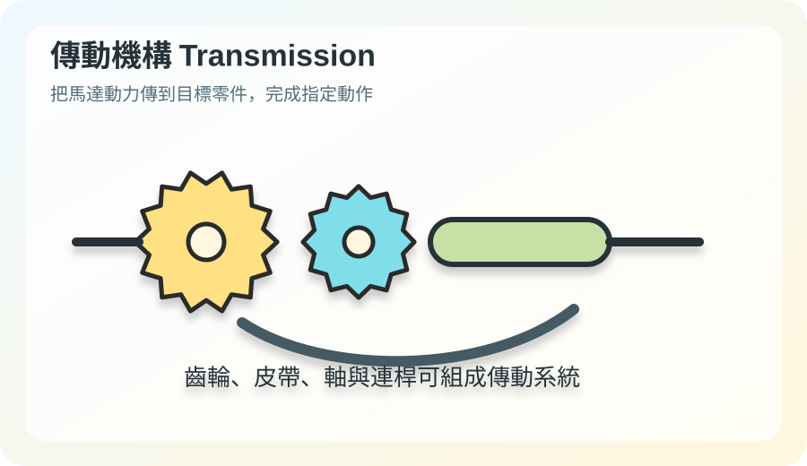
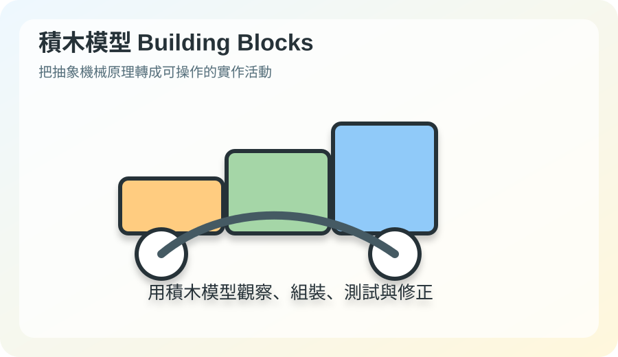

機械原理重點
用簡單規則理解機構如何運作

- 轉速與力量：小齒輪帶大齒輪，速度變慢、扭力變大。
- 減速傳動：蝸桿蝸輪可大幅降低轉速，讓模型動作更穩。
- 運動轉換：連桿可將旋轉轉成擺動或往復。
- 週期控制：凸輪可依照輪廓控制推桿升降。
- 動力來源：馬達提供旋轉，再透過傳動機構輸出到模型。
教學流程
建議課堂應用
- 先看圖片辨識零件。
- 說明此零件的功能。
- 觀察積木模型運動。
- 用 AI Studio 練習辨識。
- 完成學習單或小組討論。


